1장
반도체 재료와 트랜지스터
1.1 반도체란 무엇인가
반도체를 이해하려면 "고체 속 전자는 아무 에너지나 가질 수 없고, 허용된 에너지 띠(band) 안에만 있다"는 사실에서 출발해야 한다. 이 절에서는 그 띠가 왜 생기는지, 왜 어떤 물질에는 띠 사이에 빈틈(밴드갭)이 있고 그 크기가 물질마다 다른지를 순서대로 본다.
1.1.1 준비: 원자 구조와 주기율표
원자는 가운데 양전하를 띤 핵과 그 주위를 둘러싼 전자로 이루어진다. 전자는 핵에 가까운 안쪽 껍질부터 채워지는데, 화학 결합과 전기 전도에 참여하는 것은 거의 전적으로 가장 바깥 껍질의 전자(원자가 전자)다. 안쪽 전자는 핵에 너무 단단히 묶여 있어 구경꾼에 가깝다.
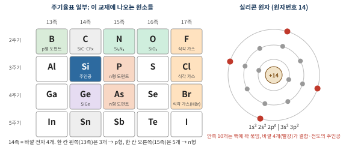
실리콘은 14족이라 바깥 전자가 4개다. 그래서 이웃 원자 넷과 전자를 하나씩 나눠 쓰는 공유결합을 이룬다. 한 칸 왼쪽의 붕소(13족)는 바깥 전자가 3개, 한 칸 오른쪽의 인(15족)은 5개라서, 이들을 실리콘 사이에 끼워 넣으면 전자가 하나 모자라거나 남는다. 이것이 1.4절의 p형·n형 도핑이다. 오른쪽 끝의 F, Cl, Br(17족)은 전자 하나만 더 받으면 껍질이 꽉 차기 때문에 실리콘에서 전자를 강하게 빼앗아 휘발성 화합물(SiF4, SiCl4)을 만든다. 식각 가스가 할로겐인 이유다.
1.1.2 밴드는 왜 생기나: 원자에서 고체로
원자 하나. 수소 원자의 전자가 1s, 2s, 2p 같은 정해진 에너지만 가질 수 있듯이, 고립된 원자의 전자는 띄엄띄엄 떨어진 준위(level)에만 존재한다. 양자역학의 결과다.
원자 둘. 두 원자가 가까워지면 각 원자의 전자 파동함수가 겹친다. 그러면 원래 같은 에너지였던 준위가 둘로 갈라진다. 하나는 두 원자 사이에 전자가 모이는, 에너지가 낮은 결합(bonding) 상태이고, 다른 하나는 사이가 비는, 에너지가 높은 반결합(antibonding) 상태다. 수소 분자(H2)가 생기는 원리와 같다.
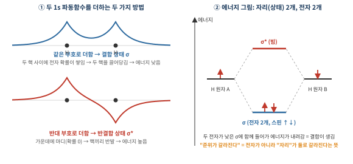
핵심은 "준위(상태) = 전자가 앉을 수 있는 자리"이고, 갈라지는 것은 전자가 아니라 자리라는 점이다. 수소 원자 A에는 1s 자리가 하나, B에도 하나 있다. 둘이 멀리 있으면 두 자리의 에너지는 같다. 가까워지면 두 자리가 섞여서 새로운 자리 두 개가 생긴다. 하나는 낮은 에너지(σ), 하나는 높은 에너지(σ*)다. 자리 수는 2개 그대로다.
이제 전자 2개를 앉힌다. 한 자리에는 스핀이 반대인 전자 2개까지 앉을 수 있으므로 두 전자 모두 낮은 σ에 들어간다. 따로 있을 때보다 에너지가 낮아졌으니 두 원자는 붙어 있으려 한다. 이것이 결합이다. 반대로 헬륨(전자 2개씩, 합계 4개)은 σ와 σ*를 모두 채워야 해서 얻는 이득이 없고, 그래서 He2 분자는 안정하게 존재하지 않는다.
원자 N개. 같은 논리를 N개로 늘리면 된다. 원자 하나가 자리 하나를 가져오므로, N개가 모이면 자리도 정확히 N개가 된다. 서로 겹치는 이웃이 있는 한 이 자리들은 같은 에너지에 머물 수 없고 위아래로 퍼진다. 실리콘 1 cm3에는 원자가 약 5×1022 개 있으니, 그만큼의 자리가 좁은 에너지 구간에 촘촘히 깔려 사실상 연속적인 띠가 된다. 이것이 에너지 밴드다.
그리고 전자를 채울 때 파울리 배타 원리가 등장한다. 한 자리에는 전자가 두 개(스핀 위·아래)까지만 들어가므로, 전자들은 모두 맨 아래 자리에 몰릴 수 없고 아래 자리부터 차례로 띠를 채워 올라간다. 정리하면, 자리가 갈라져 띠가 되는 것은 파동함수의 겹침(결합) 때문이고, 그 띠를 아래부터 채우게 만드는 것이 파울리 원리다.
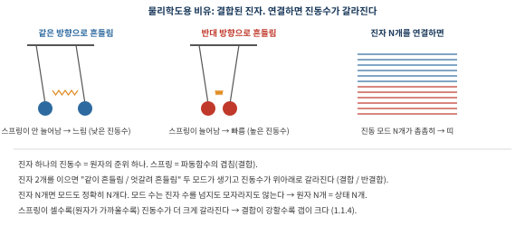
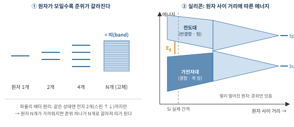
실리콘의 경우. 실리콘 원자는 바깥 껍질(3s, 3p)에 전자 4개를 갖는다. 원자들이 실제 결합 거리까지 다가오면 이 궤도들이 섞여(sp3 혼성) 이웃 넷과 공유결합을 이루고, 에너지 띠는 두 덩어리로 나뉜다. 아래 덩어리(결합 상태)는 원자당 정확히 4개의 자리를 가져서 전자 4개로 꽉 찬다. 이것이 가전자대(valence band)다. 위 덩어리(반결합 상태)는 비어 있다. 이것이 전도대(conduction band)다. 두 덩어리 사이에 상태가 아예 없는 구간이 밴드갭(Eg)이다.
같은 결과를 고체물리 언어로 보면, 전자가 결정의 주기적 퍼텐셜 속을 움직일 때 브릴루앙 영역 경계에서 브래그 반사가 일어나 정상파 두 개(이온 근처에 몰린 것과 이온 사이에 몰린 것)로 갈라지고, 그 에너지 차이가 갭이 된다(Kronig–Penney, 거의 자유 전자 모형). "원자에서 출발하는 그림(강결합)"과 "자유 전자에서 출발하는 그림"은 같은 밴드 구조를 반대 방향에서 본 것이다.
1.1.3 가전자대와 전도대의 물리적 실체
밴드 그림만 보면 추상적이지만, 실제 결정 속 모습과 일대일로 대응한다.
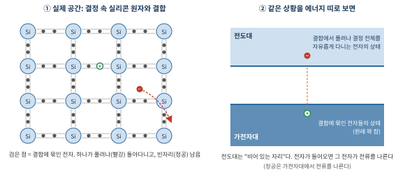
- 가전자대 = 공유결합 속 전자들의 자리. 실리콘 원자 사이 결합 하나마다 전자 두 개가 들어 있고, 모든 결합이 꽉 차 있다. 꽉 찬 띠는 전류를 나르지 못한다. 모든 전자가 이미 짝을 이뤄 자리를 다 차지하고 있어서, 전기장을 걸어도 "옮겨 갈 빈자리"가 없기 때문이다.
- 전도대 = 결합에서 풀려난 전자가 들어가는 자리. 특정 결합에 묶이지 않고 결정 전체로 퍼져 돌아다닐 수 있는 상태다. 순수한 실리콘에서는 거의 비어 있다.
"전도대"는 이름처럼 전도가 일어날 수 있는 자리라는 뜻이지, 거기에 항상 전자가 있다는 뜻이 아니다. 차가 한 대도 없는 텅 빈 고속도로를 떠올리면 된다. 길은 있지만 차가 없으니 교통량(전류)은 0이다. 열이나 도핑으로 전자가 몇 개 올라오면, 그 전자들은 빈자리가 넘치는 전도대에서 전기장을 따라 자유롭게 달릴 수 있고, 그때 전류가 흐른다.
반대로 가전자대는 차가 꽉 막힌 도로다. 차가 많아도 한 칸도 못 움직이니 교통량이 0이다. 그런데 차 한 대가 빠져나가 빈칸(정공)이 생기면, 뒤차들이 그 빈칸으로 한 칸씩 당겨 오면서 흐름이 생긴다. 이 빈칸이 반대 방향으로 움직이는 것처럼 보이는 것이 정공 전류다. 반도체의 전류는 이 두 가지, 전도대의 전자와 가전자대의 정공이 나른다.
1.1.4 도체·반도체·부도체: 갭이 있느냐, 얼마나 크냐
전류가 흐르려면 전자가 전기장에서 에너지를 얻어 바로 위의 빈 상태로 옮겨갈 수 있어야 한다. 꽉 찬 띠 안에서는 옮겨갈 빈자리가 없고, 오른쪽으로 가는 전자와 왼쪽으로 가는 전자가 정확히 짝을 이뤄 알짜 전류가 0이다. 그래서 물질의 성격은 "마지막으로 전자가 들어 있는 띠가 꽉 찼는가, 그리고 그 위 빈 띠까지 얼마나 먼가"로 정해진다.
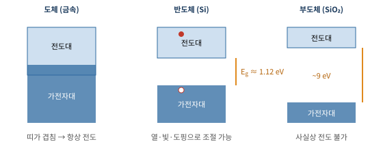
- 금속(도체): 전자가 들어 있는 띠가 일부만 차 있거나(나트륨은 3s 전자 하나라 띠가 반만 참), 위아래 띠가 겹쳐 있다. 바로 위에 빈자리가 무수히 많아 항상 전도한다. 갭이라는 개념이 없다.
- 반도체와 부도체: 둘 다 마지막 띠가 꽉 차고 그 위는 비어 있다. 차이는 오직 갭의 크기다. 갭이 작으면(대략 수 eV 이하) 열·빛·도핑으로 전자를 올려 보낼 수 있어 반도체, 너무 크면 사실상 아무것도 못 올라가 부도체다. 경계는 칼같이 정해져 있지 않다.
그럼 갭의 크기는 왜 물질마다 다를까? 1.1.2에서 본 것처럼 갭은 결합 상태와 반결합 상태가 얼마나 멀리 갈라지느냐로 정해진다. 결합이 강할수록(원자가 작고 결합 길이가 짧을수록) 두 상태가 크게 벌어져 갭이 크다. 같은 4족 원소인 탄소, 실리콘, 게르마늄, 주석을 나란히 놓으면 이 경향이 그대로 보인다.
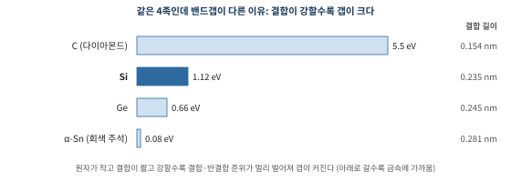
SiO2의 갭(약 9 eV)이 유난히 큰 것도 같은 논리다. 산소는 전자를 강하게 끌어당겨서 Si–O 결합의 전자들이 산소 쪽에 단단히 붙들려 있다. 이 전자를 떼어 자유롭게 만들려면 큰 에너지가 필요하므로 갭이 크다. 그래서 SiO2는 훌륭한 절연체다.
결합된 진자 비유(그림 1-3)를 떠올리면 된다. 스프링이 셀수록 "같이 흔들리는 모드"와 "엇갈려 흔들리는 모드"의 진동수 차이가 커진다. 원자 사이가 가까울수록 파동함수가 많이 겹치고(스프링이 셈), 결합 상태는 더 낮게, 반결합 상태는 더 높게 밀려난다. 가전자대는 결합 상태에서, 전도대는 반결합 상태에서 왔으므로 둘 사이 간격, 즉 갭이 커진다. 그림 1-4 ②에서도 왼쪽(원자 간격이 좁은 쪽)으로 갈수록 갭이 벌어진다.
"전자를 떼어내야 하니까"라는 직관도 같은 이야기를 화학 언어로 한 것이다. 결합이 짧고 강하면 결합 속 전자가 단단히 붙들려 있어, 그 전자를 결합에서 풀어 자유롭게 만드는(가전자대 → 전도대) 데 더 큰 에너지가 든다. 그 에너지가 바로 밴드갭이다.
1.1.5 상온에서 전자는 얼마나 넘어가나
상온의 열에너지 kBT는 약 0.026 eV로, 실리콘 갭 1.12 eV의 40분의 1밖에 안 된다. 그래도 원자가 워낙 많아 소수의 전자는 확률적으로 넘어간다. 순수한 실리콘에서 열로 생기는 전자 농도(진성 캐리어 농도)는 다음 관계를 따른다.
ni ∝ exp(−Eg / 2kBT) → Si: ni ≈ 1×1010 cm−3 (300 K)
원자 5×1022 개 중 전자 1×1010 개, 즉 원자 약 5조 개당 전자 하나꼴이다. 거의 부도체에 가깝다. 지수 함수라서 갭이 조금만 달라져도 차이가 엄청나다. 갭이 0.66 eV인 게르마늄은 ni가 실리콘보다 약 1000배 크고, 온도가 오르면 실리콘도 ni가 급격히 늘어난다. 이 "열로 생기는 원치 않는 캐리어"가 누설전류의 한 원인이다.
반도체가 쓸모 있는 이유는 바로 이 출발점이 "거의 부도체"이기 때문이다. 여기에 도펀트를 넣어 캐리어를 원하는 만큼(1015~1020 cm−3) 집어넣거나(1.4절), 전기장으로 표면에 모으면(1.6절) 전도도를 수십억 배 범위에서 마음대로 조절할 수 있다. "전도도를 외부에서 켰다 껐다 할 수 있는 물질", 이것이 반도체가 스위치와 메모리의 재료가 되는 이유다.
| 물질 | 밴드갭 (300 K) | 주요 용도 | 비고 |
|---|---|---|---|
| Ge (게르마늄) | 0.66 eV | 초기 트랜지스터, SiGe 채널·S/D | 이동도 높지만 누설 큼 |
| Si (실리콘) | 1.12 eV | 로직·메모리 대부분 | 간접 밴드갭 |
| GaAs | 1.42 eV | RF, 광소자 | 직접 밴드갭, 전자 이동도 높음 |
| 4H-SiC | 3.26 eV | 전력반도체 (전기차) | 와이드 밴드갭, 고전압 |
| GaN | 3.4 eV | 전력·RF, LED | 와이드 밴드갭 |
| Si3N4 | ~5 eV | 절연막, 식각 정지막, 낸드 트랩층 | 절연체 |
| SiO2 | ~9 eV | 게이트 산화막, 층간 절연막 | 절연체 |
그렇지 않다. 둘을 잇는 직접적인 관계는 없다. 칩의 전력은 크게 스위칭 전력(켜고 끌 때마다 커패시터를 충방전하는 에너지, ∝ CV2f)과 누설 전력(꺼져 있는데 새는 전류 × 전압)으로 나뉜다. 밴드갭은 주로 누설, 견딜 수 있는 전압(내압), 고온 동작에 영향을 준다. 트랜지스터를 켜는 데 필요한 전압은 밴드갭이 아니라 문턱전압 Vth(도핑·게이트 재료로 설계)로 정해진다.
오히려 밴드갭이 큰 SiC·GaN은 같은 두께에서 훨씬 높은 전압을 견디므로(파괴 전계가 실리콘의 약 10배), 전기차 인버터 같은 고전압 회로에서 전력 손실을 줄이려고 쓴다. 대가는 다른 곳에서 치른다. 기판이 비싸고, 결정 결함이 많고, 도핑과 좋은 접촉·산화막을 만들기 어렵다. 반대로 갭이 작은 게르마늄은 이동도가 높아 빠르지만 누설이 크다. 로직에 실리콘을 쓰는 이유는 전력이 아니라 좋은 산화막, 적당한 갭, 성숙한 공정, 가격의 균형이다.
반은 맞다. 정확히는 반도체라는 물질 자체는 항상 "약하게 통하는" 상태이고, 얼마나 통하는지는 도핑으로 정해진다(영구적). 전압으로 켜고 끄는 것은 물질이 아니라 MOS 구조가 하는 일이다. 게이트 전압이 절연막 너머 실리콘 표면에 캐리어를 모으거나 쫓아내서, 표면의 아주 얇은 층만 도체처럼 혹은 부도체처럼 바꾼다(전계 효과, 1.6절). 실리콘은 캐리어가 원래 적어서 전기장 하나로 표면 농도를 수십억 배 바꿀 수 있기 때문에 가능하다.
금속은 이게 안 된다. 금속에는 자유전자가 1022~1023 cm−3나 있어서, 바깥에서 전기장을 걸면 표면의 전자가 아주 조금만 움직여도 전기장을 상쇄해 버린다(차폐). 전기장이 원자 한 층(0.1 nm 이하)도 못 뚫고 들어가니 금속 전체를 끄는 것은 불가능하다. 다만 예외적인 물질들은 있다. VO2는 약 68 °C를 경계로 금속과 절연체 사이를 오가고(금속–절연체 전이), GST 같은 상변화 물질은 결정 상태에서 잘 통하고 비정질 상태에서 잘 안 통해서 그 차이로 데이터를 저장한다(상변화 메모리, PRAM). 이런 물질은 차세대 메모리 연구 주제다.
1.2 왜 하필 실리콘인가
최초의 트랜지스터는 게르마늄으로 만들어졌다. 그런데 지금은 거의 모든 칩이 실리콘이다. 이유는 네 가지다.
- 좋은 산화막을 스스로 만든다. 실리콘을 산소 속에서 가열하면 표면에 SiO2가 자란다(열산화, 1.2.1). 이 막은 절연성이 뛰어나고 실리콘과의 계면 결함이 매우 적다. 게르마늄 산화막은 물에 녹고 불안정하다. MOSFET의 "O(산화막)"가 가능했던 결정적 이유다.
- 밴드갭이 적당하다. 1.12 eV는 상온·고온에서 누설을 억제하기에 충분히 크면서, 도핑과 전압으로 다루기엔 충분히 작다.
- 재료가 흔하다. 실리콘은 지각에서 산소 다음으로 많은 원소다. 다만 순수한 형태가 아니라 산소와 결합한 SiO2(모래, 규석)로 존재한다(1.3절).
- 크고 완벽한 단결정을 만들 수 있다. 지름 300 mm의 무결함에 가까운 단결정 기술이 확립되어 있다.
1.2.1 열산화: "산소 분위기"란 무엇인가
공정에서 "○○ 분위기(ambient, atmosphere)"는 그 가스로 채운 환경을 뜻한다. "산소 분위기에서 가열한다"는 웨이퍼를 석영관(퍼니스)에 넣고 공기를 빼낸 뒤 산소 가스를 흘려 채운 상태에서 800~1200 °C로 가열한다는 말이다. 그러면 산소가 표면으로 확산해 들어가 실리콘과 반응한다.
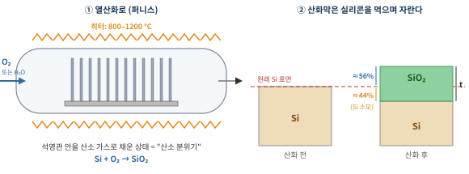
- 건식 산화(O2): Si + O2 → SiO2. 느리지만 치밀하고 계면이 좋다. 얇고 품질이 중요한 막(예전의 게이트 산화막)에 쓴다.
- 습식 산화(H2O): Si + 2H2O → SiO2 + 2H2. 훨씬 빠르다. 두꺼운 막에 쓴다.
산화막은 실리콘 위에 덧쌓이는 것이 아니라 실리콘을 먹으면서 자란다. 그래서 계면이 원래 표면보다 아래, 오염되지 않은 실리콘 속에 새로 생기고, 이것이 계면 품질이 좋은 이유다. 참고로 현대 공정의 SiO2는 열산화 외에 화학기상증착(CVD)으로 위에 쌓는 경우도 많다. 층간 절연막처럼 두꺼운 막은 대부분 증착이다.
1.2.2 이게 왜 식각 이야기로 이어지나
칩은 "막을 쌓고 → 패턴을 찍고 → 깎는" 일을 수십~수백 번 반복해 만든다. 그런데 실리콘 칩에서 가장 많이 쓰이는 절연막이 바로 이 SiO2다. 트랜지스터를 덮고, 배선 사이를 채우고, 층과 층을 갈라놓는다.
문제는 SiO2 아래 묻힌 트랜지스터에 전기를 연결해야 한다는 것이다. 그러려면 SiO2에 구멍(콘택홀)을 뚫어야 한다. 이때 요구 조건은 두 가지다. SiO2는 끝까지 깎아 구멍을 완전히 열어야 하고, 동시에 바로 아래 실리콘(또는 질화막)은 거의 깎지 말고 멈춰야 한다. 아래층까지 파 버리면 트랜지스터가 손상된다.
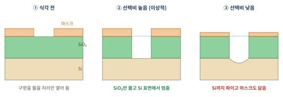
이 "원하는 막은 빨리, 원치 않는 막은 느리게" 깎는 능력을 선택비(selectivity)라고 한다.
선택비 = 깎을 막의 식각 속도 / 남길 막의 식각 속도 (예: SiO2 50 nm/min, Si 1 nm/min → 50:1)
정리하면, 실리콘 칩은 SiO2를 많이 쓰기 때문에 식각 공정의 상당수가 "SiO2는 깎고, 그 아래나 옆의 Si·Si3N4는 남기는" 선택비 문제가 된다. 실제로는 Si 위에서 바로 멈추기 어려워 SiO2 아래에 Si3N4 얇은 막을 미리 깔아 "여기서 멈춰"라는 정지막으로 쓰는 경우가 많다(1.7절 자기정렬 콘택).
이 식각에 쓰는 것이 fluorocarbon(CxFy) 플라즈마다. 막 위에 쌓이는 CFx 폴리머가 SiO2 위에서는 막 속 산소에 의해 소모돼 얇게 유지되고, Si·Si3N4 위에서는 두껍게 쌓여 보호막 역할을 하면서 선택비가 생긴다. 네가 C4F8·C3F6·C4F6로 SiO2와 Si3N4의 식각을 연구한 것이 정확히 이 메커니즘이다. 2부에서 다시 자세히 다룬다.
채널은 아니다. 콘택홀이 내려가 닿는 Si는 트랜지스터의 소스·드레인 영역이고, 채널은 게이트 바로 아래의 Si 표면이다(1.6절). 둘 다 같은 실리콘이지만 역할이 다르다. 콘택홀은 소스·드레인에 금속을 연결하기 위한 구멍이다.
남은 CFx 막은 뒤에서 따로 걷어낸다. 대표적인 순서는 이렇다. 먼저 식각 레시피 마지막에 산소를 섞은 짧은 단계로 바닥의 폴리머를 얇게 정리하기도 한다. 식각이 끝나면 산소 플라즈마로 포토레지스트를 태워 없애는 애싱(ashing)을 하는데, CFx 폴리머도 탄소 화합물이라 산소와 반응해 CO, CO2, COF2 같은 기체로 함께 날아간다. 그래도 남는 잔여물은 습식 세정으로 씻어낸다. 바닥에 폴리머가 남으면 콘택 저항이 커지므로 이 후처리도 식각 공정의 일부로 함께 관리한다. 세정은 세메스의 주력 분야 중 하나이기도 하다.
절연한다는 공통점 외의 물성이 꽤 다르고, 공정은 그 차이를 이용한다.
| 성질 | SiO2 | Si3N4 | 그래서 |
|---|---|---|---|
| Si와의 계면 | 매우 깨끗함 (결함 적음) | 결함·전하 함정 많음 | 게이트 절연막은 SiO2 계열 |
| 유전율 k | 3.9 | 약 7.5 | 배선 사이엔 SiO2·low-k (기생 정전용량↓) |
| 막 치밀도 | 상대적으로 성김 | 매우 치밀 | SiN은 수분·산소·나트륨 확산 차단막, 산화 방지 마스크 |
| 식각 화학 | F계 플라즈마에 잘 깎임 | 같은 조건에서 더 느림, 폴리머가 잘 쌓임 | 서로를 식각 정지막으로 쓸 수 있음 |
| 전하 저장 | 거의 안 함 | 전자를 잘 가둠 (트랩) | 낸드 플래시 전하 저장층 (3장) |
| 기계적 성질 | 무름 | 단단하고 응력 큼 | CMP 정지막, 채널에 응력 걸기 |
즉 SiO2는 "깨끗한 계면과 낮은 유전율", Si3N4는 "단단함·치밀함·다른 식각 속도"가 강점이다. 둘을 번갈아 쌓은 것이 V-NAND의 ON 스택(3장)이고, 그 스택을 한 번에 뚫는 것이 HARC 식각이다.
1.3 모래에서 웨이퍼까지
다르다. 이름이 비슷해서 헷갈리기 쉽다.
| 이름 | 화학식 | 정체 |
|---|---|---|
| 규소 (실리콘, silicon) | Si | 원소 그 자체. 웨이퍼의 재료 |
| 규사 · 규석 (실리카) | SiO2 | 모래·돌. 규소가 산소와 결합한 이산화규소. 웨이퍼의 원료이자 절연막의 재료 |
| 질화규소 | Si3N4 | 규소 + 질소. 식각 정지막, 스페이서, 낸드 트랩층 |
| 탄화규소 | SiC | 규소 + 탄소. 전력반도체, 식각 장비의 부품 소재 |
| 실리콘 (silicone) | -(Si–O)n- | 규소와 산소 사슬에 유기물이 붙은 고분자. 주방용품, 실리콘 고무. 반도체 실리콘과 무관 |
규소는 산소와 너무 잘 결합해서 자연에는 순수한 형태로 거의 없고 SiO2 상태로 존재한다. 그래서 웨이퍼를 만드는 첫 단계가 모래에서 산소를 떼어내는 것이다.
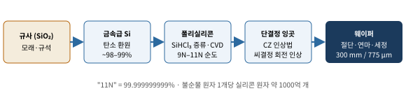
- 환원: 규석을 아크로에서 탄소(코크스, 목탄)와 함께 약 2000 °C로 가열해 산소를 떼어낸다. SiO2 + 2C → Si + 2CO. 순도 약 98~99%의 금속급 실리콘이 된다.
- 정제: 이를 HCl과 반응시켜 액체인 트리클로로실란(SiHCl3)으로 만든 뒤 증류로 불순물을 걸러내고, 수소와 함께 고온의 실리콘 봉 위에 다시 석출시키면(Siemens 공정) 반도체급 폴리실리콘이 된다. 순도 9N~11N(99.9999999~99.999999999%).
- 단결정 성장(CZ법): 폴리실리콘을 석영 도가니에서 녹이고(융점 1414 °C), 원하는 방위의 씨결정을 담갔다가 천천히 회전시키며 끌어올린다. 녹은 실리콘이 씨결정의 원자 배열을 그대로 따라 굳으면서 하나로 이어진 단결정 잉곳이 자란다. 이때 붕소나 인을 섞어 기본 도핑을 정한다.
- 가공: 잉곳을 얇게 자르고, 갈고, 화학적 기계적 연마(CMP)로 거울면을 만든다. 표준은 지름 300 mm, 두께 약 775 μm, 표면 방위 (100) 웨이퍼다.
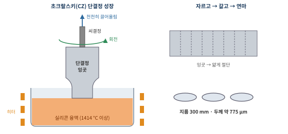
왜 (100)인가: (100) 면은 SiO2와의 계면 결함 밀도가 가장 낮아 MOSFET 특성이 좋다. 또 결정면마다 식각 속도가 달라서(KOH 습식 식각에서 (111)면이 가장 느림) 웨이퍼 방위는 식각 형상에도 영향을 준다.
생긴다. 실리콘 표면은 공기 중 상온에서도 산소·수분과 반응해 몇 시간에서 며칠 사이에 약 1~2 nm의 자연 산화막(native oxide)을 만든다. 다만 이 막은 얇은 두께에서 스스로 멈추고(산소가 더 이상 잘 못 뚫고 들어감) 품질도 좋지 않다. 그래서 공정에서는 필요할 때 묽은 불산(HF)으로 이 막을 벗겨 낸 뒤, 원하는 두께와 품질의 막을 다시 만든다. 1.2.1의 열산화가 800 °C 이상의 고온을 쓰는 이유도 실리콘 속으로 산소를 빠르게 밀어 넣어 두껍고 치밀한 막을 원하는 만큼 키우기 위해서다. 잉곳 표면의 산화막은 어차피 절단·연마 과정에서 깎여 나간다.
1.4 도핑과 PN 접합
1.4.1 n형과 p형
실리콘은 4족 원소라 원자 하나가 이웃 4개와 전자를 하나씩 내어 공유결합을 이룬다. 여기에 원자 일부를 다른 원소로 바꿔 넣으면 전하 운반자(캐리어)를 의도적으로 만들 수 있다. 이것이 도핑이다.
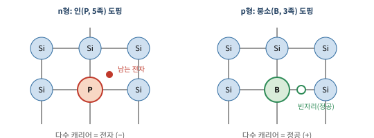
- n형: 5족 원소(인 P, 비소 As)를 넣으면 넷은 결합에 쓰이고 전자 하나가 남는다. 이 전자가 쉽게 떨어져 나가 자유전자가 된다. 다수 캐리어가 전자(negative)라서 n형이다.
- p형: 3족 원소(붕소 B)를 넣으면 결합에 전자 하나가 모자라 빈자리가 생긴다. 이웃 전자가 그 자리를 메우면 빈자리가 반대로 옮겨 다니는 것처럼 보이고, 이것이 양전하 입자처럼 행동한다. 이 빈자리가 정공(hole)이고, 다수 캐리어가 정공(positive)이라서 p형이다.
공정에서는 도펀트 이온을 가속해 웨이퍼에 박아 넣는 이온 주입으로 원하는 위치에만 도핑하고, 열처리(어닐링)로 깨진 결정을 회복시키며 도펀트를 격자 자리에 앉힌다(활성화). 이온을 막을 곳을 가리는 마스크가 포토레지스트나 산화막이다.
1.4.2 도펀트의 전자는 왜 그렇게 쉽게 전도대로 올라가나
실리콘 자신의 전자가 전도대로 가려면 1.12 eV가 필요했다. 그런데 인(P)이 남긴 전자는 0.045 eV면 된다. 25배나 쉽다. 이유는 이 전자가 결합에 묶인 전자가 아니라, P+ 이온에 약하게 붙어 있을 뿐인 전자이기 때문이다.
인 원자는 전자 하나를 내놓으면 +1 이온이 된다. 남은 전자는 이 +1 전하 주위를 도는데, 마치 수소 원자와 같다. 다만 두 가지가 다르다. 실리콘 결정 속이라 전기력이 유전율(εr ≈ 11.7)만큼 약해지고, 전자가 결정 속에서 가벼운 입자처럼 움직인다(유효질량 m* ≈ 0.26 m0). 수소 원자 모형에 그대로 대입하면,
Ed ≈ 13.6 eV × (m*/m0) / εr2 ≈ 13.6 × 0.26 / 137 ≈ 0.03 eV
로, 실측값(P: 0.045 eV, As: 0.054 eV, B: 0.045 eV)과 같은 수준이 나온다. 결합 에너지가 상온 열에너지(0.026 eV)와 비슷하니, 상온에서 도펀트 전자는 거의 전부 떨어져 나와 전도대로 간다. 밴드 그림으로는 도너 준위가 전도대 바로 아래에 있는 것으로 표현한다.
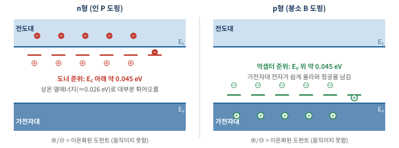
결과적으로 n형 실리콘의 전자 농도는 거의 도핑 농도와 같다. 인을 1017 cm−3 넣으면 전자도 약 1017 cm−3로, 순수 실리콘(1010)보다 천만 배 많다. 이렇게 넣는 양으로 전도도를 정밀하게 정할 수 있다.
두 가지를 구분해야 한다.
① 올라가는 것은 열(또는 빛)의 일이다. 전자를 아래 띠(또는 도너 준위)에서 전도대로 들어 올리는 에너지는 격자의 열진동이나 빛이 준다. 동시에 전도대 전자가 다시 내려와 정공·이온과 만나는 일(재결합)도 계속 일어난다. 그래서 왔다 갔다 하는 것은 맞고, 올라가는 속도와 내려오는 속도가 같아진 동적 평형 상태가 위에서 말한 농도다. 도너 전자가 잘 안 내려오는 이유는 전도대에 갈 수 있는 빈자리가 도너 준위 수보다 압도적으로 많아서, 확률적으로 위에 있을 가능성이 훨씬 크기 때문이다.
② 전압(전기장)은 이미 자유로운 캐리어를 움직이는 일을 한다. 보통 소자에 거는 전기장으로는 전자를 1 eV 갭 너머로 들어 올리지 못한다. 대신 전압을 걸면 밴드 전체가 기울어지고, 전도대에 이미 있던 전자는 그 경사를 따라 (+)극 쪽으로 "굴러 내려가며" 전류를 만든다. 이것이 드리프트(drift)다. 정공은 반대 방향으로 움직인다.
정리하면 "얼마나 많이 있느냐(농도)는 도핑과 온도가, 얼마나 흐르느냐(전류)는 전기장이" 정한다. 전류 밀도 J = q·n·μ·E 에서 n이 앞쪽, E가 뒤쪽 이야기다. (예외적으로 아주 강한 전기장은 터널링이나 눈사태 항복으로 직접 캐리어를 만들 수 있는데, 이는 1.4.4와 1.7절에서 다시 나온다.)
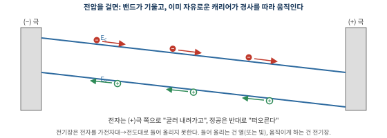
1.4.3 페르미 준위: 밴드 그림을 읽기 위한 도구
PN 접합을 밴드로 이해하려면 페르미 준위(EF)를 알아야 한다. 통계역학을 배웠다면 한 문장으로 끝난다. 페르미 준위는 전자의 화학 퍼텐셜이다. 처음 보는 사람을 위해 풀어 쓰면 다음과 같다.
① 자리마다 전자가 있을 확률이 정해져 있다. 온도 T에서 에너지 E인 자리에 전자가 있을 확률은 페르미–디랙 분포를 따른다.
f(E) = 1 / [ 1 + exp((E − EF) / kBT) ]
절대영도에서는 EF 아래 자리는 전부 차고(확률 1) 위는 전부 빈(확률 0) 계단 모양이다. 온도가 있으면 EF 근처 몇 kBT 폭으로 경계가 부드럽게 번진다. EF는 확률이 정확히 1/2인 에너지, 즉 전자 바다의 "수면 높이"다.
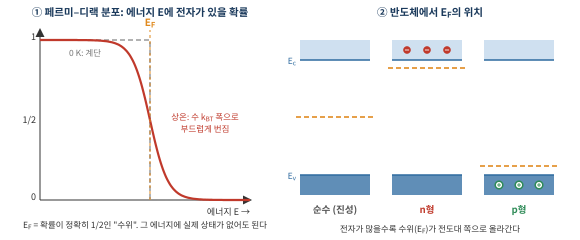
② 반도체에서는 EF가 갭 안에 있다. 갭 안에는 자리가 없으니 "확률 1/2인 곳에 아무 전자도 없다"는 것이 이상해 보이지만 문제없다. EF는 실제 자리가 아니라 확률 분포의 기준선이다. 중요한 것은 EF와 전도대 바닥 사이 거리다. 전도대 전자 농도는 근사적으로
n ≈ Nc exp[ −(Ec − EF) / kBT ]
로, EF가 전도대에 kBT(0.026 eV)만큼 가까워질 때마다 전자가 약 2.7배씩 늘어난다. 그래서 인을 많이 넣은 n형은 EF가 전도대 바로 아래에, 붕소를 넣은 p형은 가전자대 바로 위에 있다. 순수 실리콘은 대략 갭 한가운데다.
③ 평형에서는 EF가 어디서나 평평하다. 화학 퍼텐셜이 다른 두 계를 붙이면 입자가 높은 쪽에서 낮은 쪽으로 흘러 같아질 때 멈추듯, 두 물질을 붙여 평형에 이르면 EF는 하나로 맞춰진다. 물그릇 두 개를 관으로 이으면 수면이 같아지는 것과 같다. 반대로 EF가 기울어 있다면 그곳에는 전류가 흐르고 있다는 뜻이고, 바깥에서 전압 V를 걸면 양쪽 EF가 qV만큼 어긋난다.
수면이 다른 n형(높음)과 p형(낮음)을 붙이면, 전자가 n에서 p로 흘러 수면을 맞추고 그 결과 밴드가 휘어진다. 이것이 다음에 볼 PN 접합이다.
1.4.4 PN 접합: 한쪽으로만 흐르는 문
p형과 n형을 붙이면 어떤 일이 일어나는지 단계별로 보자.
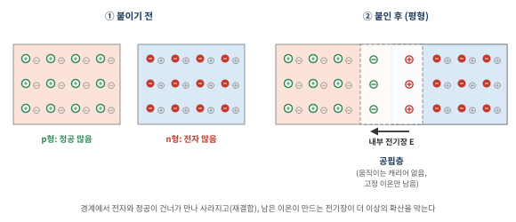
- 확산: n쪽에는 전자가, p쪽에는 정공이 많다. 농도 차이가 있으면 입자는 퍼져 나간다(향수가 방에 퍼지듯). n쪽 전자가 p쪽으로, p쪽 정공이 n쪽으로 건너간다.
- 재결합: 건너간 전자와 정공이 경계 근처에서 만나 서로를 메우며 사라진다.
- 이온만 남는다: 캐리어가 떠난 자리에는 결정에 고정된 도펀트 이온이 남는다. n쪽에는 ⊕(전자를 내준 인 이온), p쪽에는 ⊖(전자를 받은 붕소 이온). 움직이는 캐리어가 고갈된 이 영역이 공핍층(depletion region)이다.
- 내부 전기장이 확산을 막는다: ⊕와 ⊖ 사이에 n→p 방향의 전기장이 생긴다. 이 전기장은 전자를 다시 n쪽으로 밀어낸다. 확산하려는 힘과 전기장이 밀어내는 힘이 같아지면 평형이 된다.
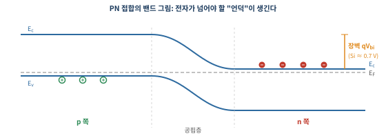
밴드 그림으로 보면 이 전기장은 언덕이다. n쪽 전도대의 전자가 p쪽으로 가려면 qVbi(실리콘에서 약 0.6~0.8 V 상당)만큼의 언덕을 넘어야 한다. 이제 바깥에서 전압을 걸어 보자.
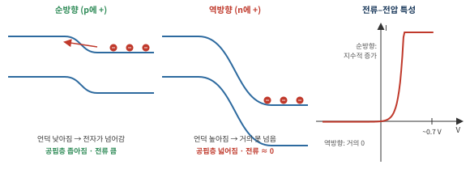
- 순방향(p에 +, n에 −): 바깥 전압이 내부 전기장을 상쇄해 언덕이 낮아지고 공핍층이 좁아진다. 언덕을 넘을 수 있는 전자 수는 높이에 대해 지수적으로(볼츠만 분포) 늘어나므로, 실리콘 다이오드는 약 0.6~0.7 V부터 전류가 급격히 커진다. I ∝ exp(qV/kBT) − 1.
- 역방향(n에 +): 언덕이 더 높아지고 공핍층이 넓어진다. 다수 캐리어는 거의 못 넘고, 열로 생긴 극소수 캐리어만 흘러 아주 작은 누설전류만 남는다. 전압을 아주 크게 걸면 전기장이 너무 세져 갑자기 전류가 터지는 항복(breakdown)이 일어난다.
이렇게 한쪽으로만 전류를 흘리는 소자가 다이오드다.
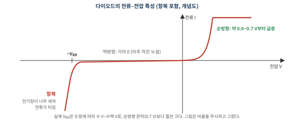
그렇다. 아무것도 연결하지 않아도 접합 안에는 이온들이 만든 전위차(내장 전위 Vbi, 실리콘에서 약 0.6~0.8 V)가 이미 존재한다. 다만 이것은 건전지가 아니다. 평형 상태에서는 확산하려는 흐름과 전기장이 밀어내는 흐름이 정확히 상쇄돼 알짜 전류가 0이고, 전압계를 대도 0이 읽힌다. 전압계 단자와 반도체가 만나는 곳에도 접촉 전위가 생겨서 합이 정확히 상쇄되기 때문이다. 페르미 준위가 평평하다는 것(그림 1-17)이 바로 "꺼낼 수 있는 에너지가 없다"는 뜻이다.
바깥 전압은 이 이미 있는 언덕의 높이를 바꾼다. 순방향이면 언덕이 V만큼 낮아져(Vbi − V) 문이 열리고, 역방향이면 높아져(Vbi + V) 문이 더 단단히 닫힌다. "전압을 걸면 열리고, 반대로 걸면 닫힌다"는 이해가 맞다.
항복은 역방향 전압이 너무 커서 공핍층 전기장이 한계를 넘을 때 생긴다. 두 가지 메커니즘이 있다. 눈사태 항복은 공핍층을 지나는 소수의 캐리어가 강한 전기장에 가속돼 격자와 충돌하면서 결합 전자를 떼어내고, 그 전자가 또 다른 전자를 떼어내는 연쇄 반응이다. 제너 항복은 도핑이 아주 높아 공핍층이 얇을 때, 전자가 갭을 터널링으로 곧장 건너가는 현상이다. 항복 자체는 소자를 반드시 망가뜨리지는 않으며, 일부러 항복 전압에서 쓰는 제너 다이오드(전압 기준용)도 있다. 다만 열이 과하면 파괴된다.
1.4.5 MOSFET 속에 숨은 PN 접합
PN 접합은 독립 부품이기도 하지만, MOSFET 안에도 들어 있다. NMOS는 p형 기판에 n+ 소스·드레인을 만든 구조라 소스–기판, 드레인–기판이 각각 PN 접합이다. 보통 이 접합들은 역방향으로 걸려 있어 전류를 막고, 옆 소자와 전기적으로 분리해 준다. 트랜지스터가 꺼져 있을 때 소스와 드레인 사이에 전류가 흐르지 않는 이유도 서로 등을 맞댄 두 PN 접합(n+–p–n+) 때문이다. 게이트가 하는 일은 이 사이에 전자의 다리(반전층)를 놓아 주는 것이다(1.6절).
1.5 트랜지스터의 역사: 진공관에서 MOSFET까지
트랜지스터는 "전기 신호로 다른 전기 신호를 켜고 끄거나 증폭하는 소자"다. 그 이전에는 진공관이 이 역할을 했다.
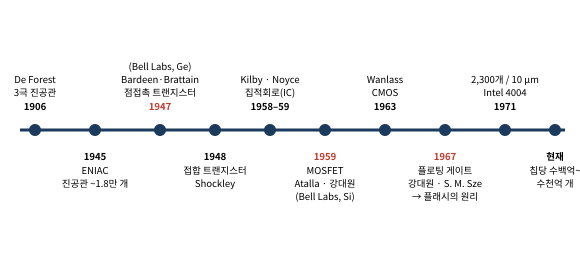
진공관의 시대
진공관은 가열된 필라멘트에서 튀어나온 전자를 진공 속 금속판으로 보내고, 그 사이 그리드 전압으로 흐름을 조절하는 소자다(1906년 Lee De Forest의 3극관). 최초의 범용 전자식 컴퓨터 ENIAC(1945)은 진공관 약 1만 8천 개로 만들어졌는데, 방 하나를 채웠고 엄청난 전력을 먹었으며 진공관이 수시로 타서 고장 났다. 작고, 차갑고, 고장 나지 않는 스위치가 필요했다.
1947년, 벨 연구소
1947년 12월, 미국 벨 연구소의 John Bardeen과 Walter Brattain이 게르마늄 결정에 금속 접점 두 개를 바짝 붙여 신호를 증폭하는 데 성공했다. 점접촉 트랜지스터다. 같은 그룹의 William Shockley는 이듬해 더 안정적인 접합형(bipolar) 트랜지스터 이론을 내놓았다. 1.4절의 PN 접합 두 개를 붙인 구조(npn 또는 pnp)다. 세 사람은 1956년 노벨 물리학상을 받았다. 이름 "transistor"는 transfer + resistor에서 왔다.
집적회로(IC): 여러 소자를 한 덩어리에
1958년 Texas Instruments의 Jack Kilby가 게르마늄 한 조각 위에 트랜지스터·저항·커패시터를 함께 만든 최초의 집적회로를 시연했고, 1959년 Fairchild의 Robert Noyce는 실리콘 위에 평면(planar) 공정(Jean Hoerni 개발)으로 소자를 만들고 금속 배선으로 연결하는 방식을 고안했다. 평면 공정의 핵심이 바로 1.2절의 열산화막이다. 산화막을 마스크로 쓰고, 필요한 곳만 식각해 열고, 그 구멍으로 도핑하는 방식이 "평평한 웨이퍼 위에 막을 쌓고, 패턴을 찍고, 깎는다"는 오늘날 칩 제조의 기본 틀이 되었다.
MOSFET과 강대원
현대 반도체의 주인공인 MOSFET(Metal-Oxide-Semiconductor Field-Effect Transistor)은 1959년 벨 연구소의 Mohamed Atalla와 강대원(Dawon Kahng) 박사가 실리콘 위 열산화막을 이용해 처음 구현했다. 바이폴라 트랜지스터는 전류로 전류를 제어하지만, MOSFET은 게이트에 거는 전압(전기장)만으로 채널을 열고 닫는다. 게이트로 전류가 거의 흐르지 않아 전력 소모가 작고, 구조가 단순해 작게 만들기 쉽다. 이 장점 덕분에 MOSFET은 역사상 가장 많이 생산된 인공물이 되었다.
강대원 박사는 1967년 Simon Sze와 함께 플로팅 게이트 메모리도 발표했다. 게이트 안에 고립된 도체층을 넣어 전하를 가둬두면 전원이 꺼져도 정보가 남는다는 아이디어로, 이것이 훗날 플래시 메모리(3장)의 원리가 된다.
정답이 공식적으로 정해진 질문은 아니지만, 흔히 거론되는 이유는 이렇다.
첫째, 상의 성격. 1956년 노벨 물리학상은 "반도체 연구와 트랜지스터 효과의 발견"에 주어졌다. 새로운 물리 현상의 발견으로 평가받은 것이다. 반면 게이트 전압으로 전류를 제어한다는 전계 효과 트랜지스터의 아이디어 자체는 1920~30년대 Lilienfeld와 Heil의 특허로 이미 제안되어 있었고, MOSFET은 그것을 실리콘과 열산화막으로 처음 제대로 작동시킨 공학적 발명으로 여겨졌다. 노벨 물리학상은 이런 공학적 발명에 보수적인 편이다.
둘째, 시간. 노벨상은 살아 있는 사람에게만 주는데, MOSFET의 엄청난 영향이 분명해진 것은 수십 년 뒤였다. 강대원 박사는 1992년에 세상을 떠났다. 집적회로로 Kilby가 2000년에 노벨상을 받았을 때 공동 발명자로 꼽히는 Noyce가 빠진 것도 그가 1990년에 이미 작고했기 때문이다.
대신 강대원 박사와 Atalla는 MOSFET 발명으로 2009년 미국 발명가 명예의 전당에 올랐다. 면접에서는 "노벨상은 못 받았지만, 오늘날 가장 많이 만들어진 소자를 발명했다" 정도로 말하면 충분하다.
CMOS와 무어의 법칙
1963년 Fairchild의 Frank Wanlass는 n채널과 p채널 MOSFET을 짝지어 쓰는 CMOS를 고안했다(1.6절). 둘 중 하나는 항상 꺼져 있으므로, 상태가 바뀌는 순간 외에는 전류가 거의 흐르지 않는다. 오늘날 거의 모든 로직 칩이 CMOS다.
1965년 Gordon Moore는 칩에 들어가는 트랜지스터 수가 일정 주기마다 두 배가 된다는 경향을 관찰했다(무어의 법칙, 1975년 "약 2년마다 두 배"로 수정). 실제로 1971년 Intel 4004에는 10 μm 공정으로 트랜지스터 2,300개가 들어갔고, 50년 뒤의 칩에는 1,000억 개 이상이 들어간다.
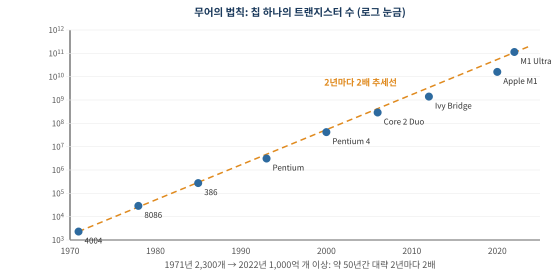
무어의 법칙은 물리 법칙이 아니라 관찰이자 업계가 스스로 정한 목표다. 이 목표를 어떻게 달성해 왔는지, 그리고 "작게 만드는 것(스케일링)"과는 어떤 관계인지는 1.8절에서 정리한다.
1.6 MOSFET의 구조와 동작
구조: 네 개의 단자
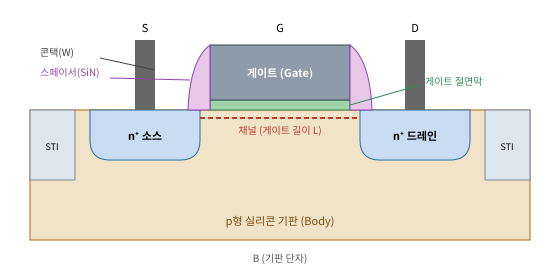
- 소스·드레인: 기판과 반대 타입으로 고농도 도핑된 영역. NMOS면 p형 기판에 n+ 소스·드레인.
- 게이트 절연막: 게이트와 채널을 전기적으로 갈라놓는 아주 얇은 절연막. 최신 소자에서는 1~2 nm 수준(SiO2 환산 두께).
- 게이트: 전압을 걸어 아래 채널을 여닫는 전극.
- 스페이서: 게이트 양옆의 질화막 벽. 소스·드레인 주입 위치를 게이트에서 살짝 떨어뜨려 놓는 자기정렬 마스크 역할.
- STI(Shallow Trench Isolation): 옆 트랜지스터와 전기적으로 분리하기 위해 실리콘을 파서 산화막으로 채운 홈.
동작: 반전층이 생기는 순간
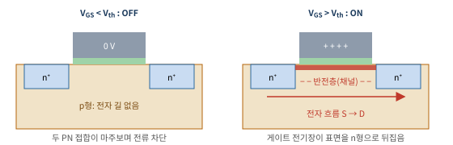
게이트, 절연막, 실리콘은 그대로 하나의 평행판 커패시터다. 게이트에 양의 전압을 걸면 반대편 실리콘 표면에 음전하가 유도된다. 처음에는 p형의 정공이 밀려나 공핍층이 생기고, 전압이 문턱전압(Vth)을 넘으면 표면에 전자가 모여 얇은 n형 층, 즉 반전층(inversion layer)이 생긴다. 이 층이 소스와 드레인을 잇는 다리(채널)가 되어 전류가 흐른다. 물리학도의 언어로 말하면, 게이트 전기장으로 표면의 페르미 준위와 밴드의 상대 위치를 끌어내려 표면을 n형처럼 만드는 것이다.
포화 영역의 드레인 전류는 간단한 모델로 다음과 같다.
ID = ½ · μ · Cox · (W / L) · (VGS − Vth)2, Cox = εox / tox
여기서 μ는 캐리어 이동도, W와 L은 채널 폭과 길이, tox는 절연막 두께다. 이 식은 외우는 것보다 어디서 나왔는지 보면 훨씬 잘 이해된다.
전류 식 뜯어보기: "전하량 × 속도"
전류는 "단위 시간에 지나가는 전하"다. 수도관으로 치면 "관 속 물의 양 × 물이 흐르는 속도"다. 채널도 똑같다.
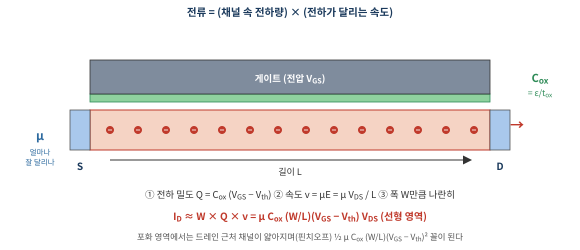
- 채널에 전하가 얼마나 있나: 게이트–절연막–실리콘은 커패시터다. 커패시터 전하는 Q = CV이고, Vth까지는 공핍층을 만드는 데 쓰이므로 반전층 전하는 단위 면적당 Q = Cox(VGS − Vth)다.
- 그 전하가 얼마나 빨리 달리나: 드레인 전압 VDS가 길이 L에 걸리면 전기장은 E = VDS/L이고, 전자의 평균 속도는 v = μE다. 이동도 μ는 "같은 전기장에서 얼마나 잘 달리나"를 나타낸다. 결정 속에서 원자 진동이나 불순물에 부딪히는 빈도가 낮을수록, 유효질량이 가벼울수록 크다.
- 곱하면: ID = W × Q × v = μCox(W/L)(VGS − Vth)VDS. 드레인 전압이 작을 때의 식(선형 영역)이다.
드레인 전압을 키우면 드레인 쪽 채널 전하가 줄어들다가 결국 끊기는 지점이 생기고(핀치오프), 그 이후로는 VDS를 올려도 전류가 거의 늘지 않는다. 이 포화 영역의 전류가 앞의 ID = ½μCox(W/L)(VGS − Vth)2다.
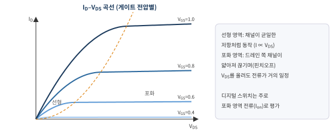
이제 이 식의 손잡이 네 개가 각각 어떤 기술 발전으로 이어졌는지 보자.
| 손잡이 | 물리적 의미 | 업계가 한 일 | 식각과의 관계 |
|---|---|---|---|
| L ↓ (게이트 길이) | 달릴 거리가 짧아지고, 같은 전압에서 전기장이 세짐 → 더 많이, 더 빨리 | 리소그래피로 더 가는 선을 찍고, 식각으로 그 선을 정확히 옮김. 단, 너무 짧으면 단채널 효과(1.9.2) | 게이트 식각의 CD 제어. 몇 nm 오차가 Vth를 흔듦 |
| Cox ↑ (= ε/tox) | 같은 게이트 전압으로 더 많은 전하를 끌어모음 | 절연막을 얇게(tox↓) → 터널링 한계 → 유전율 높은 HfO2로(ε↑, 1.7절) | high-k·금속 게이트 패터닝, 얇은 막 위에서 멈추기 |
| μ ↑ (이동도) | 같은 전기장에서 더 빨리 달림 | 실리콘 격자를 늘리거나 눌러(응력) 밴드 구조를 바꿔 유효질량·산란을 줄임. PMOS는 소스·드레인에 SiGe를 넣어 채널을 압축, NMOS는 SiN 막의 인장 응력 이용 | S/D 리세스 식각 형상이 응력 크기를 좌우 |
| W ↑ (채널 폭) | 전류 길을 넓힘 | 평면에서는 면적이 늘어 손해 → 채널을 세우거나(FinFET) 쌓아서(GAA) 바닥 면적은 그대로 두고 W만 키움 | 핀·나노시트의 수직 식각, 측면 선택 식각 |
스위치로서의 성능: ID–VGS 곡선
트랜지스터를 실제로 평가할 때 가장 많이 보는 그래프가 게이트 전압에 따른 드레인 전류다. 세로축을 로그로 그리면 스위치의 품질이 한눈에 보인다.
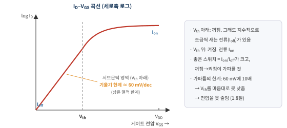
- 켜진 전류 Ion: 클수록 회로가 빠르다(부하 커패시터를 빨리 충전).
- 꺼진 전류 Ioff: 작을수록 대기 전력이 적다. 칩 하나에 트랜지스터가 수백억 개이니, 하나당 아주 작은 누설도 모이면 크다.
- 서브문턱 기울기: Vth 아래에서 전류가 10배 바뀌는 데 필요한 게이트 전압. 전자가 열에너지(볼츠만 분포)로 장벽을 넘는 원리라, 상온에서는 아무리 잘 만들어도 약 60 mV에 10배보다 가파를 수 없다. PN 접합의 exp(qV/kBT)와 같은 뿌리다.
이 마지막 한계 때문에 Vth를 마음대로 낮출 수 없고(낮추면 Ioff가 폭증), 그래서 전원 전압도 일정 수준 아래로 못 내린다. 1.8절에서 스케일링이 벽에 부딪힌 핵심 이유가 바로 이것이다. 게이트가 채널을 더 잘 붙잡을수록(1.9절의 FinFET·GAA) 이 기울기가 이상값 60 mV/dec에 가까워진다.
NMOS, PMOS, 그리고 CMOS
NMOS는 전자, PMOS는 정공으로 전류를 나른다. 둘은 거울상이다. NMOS는 게이트 전압이 높으면 켜지고(표면에 전자를 끌어모음), PMOS는 게이트 전압이 소스(보통 VDD)보다 충분히 낮으면 켜진다(표면에 정공을 끌어모음). 그래서 같은 입력을 두 트랜지스터에 동시에 주면, 하나가 켜질 때 다른 하나는 반드시 꺼진다. 이것이 CMOS(Complementary MOS, 상보형 MOS)의 핵심이다.
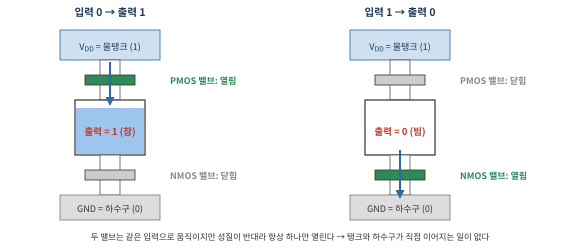
PMOS는 n형 기판(n-well)에 p+ 소스·드레인을 만들고, 게이트에 음의 전압을 걸 때 켜진다. 정공 이동도는 전자의 절반 이하라 PMOS는 보통 더 넓게 만들거나 SiGe로 응력을 건다. CMOS 인버터는 NMOS와 PMOS를 직렬로 연결해 입력이 1이면 NMOS만, 0이면 PMOS만 켜지게 만든 구조로, 정지 상태에서는 전원에서 접지로 가는 길이 항상 끊겨 있어 전력 소모가 거의 없다.
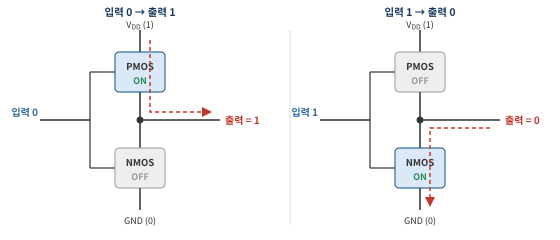
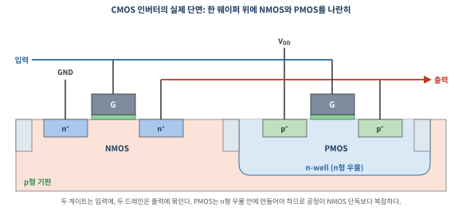
CMOS의 장점은 정지 상태 전력이 거의 0이라는 것이다. 전류가 흐르는 것은 출력이 0↔1로 바뀌는 순간, 양동이를 채우거나 비우는 동안뿐이다. 이것이 1.1.5에서 말한 스위칭 전력(∝ CV2f)이다. 공정 입장에서는 n형 우물, p+와 n+ 소스·드레인을 따로 만들어야 하므로 마스크와 이온 주입 단계가 늘어난다.
이 인버터에 트랜지스터를 몇 개 더 붙이면 NAND, NOR 같은 논리 게이트가 되고, 이것들을 조합하면 덧셈기, 메모리 셀, CPU가 된다. 결국 모든 디지털 칩은 "켜고 끄는 스위치"의 조합이다.
1.7 트랜지스터는 무엇으로 만드나: 재료와 물성
"트랜지스터 = 실리콘"은 반만 맞다. 최신 트랜지스터 하나에는 주기율표의 수십 가지 원소가 들어간다. 위치별로 어떤 물성이 요구되는지가 재료 선택을 결정한다.
| 위치 | 재료 (변천) | 요구 물성 | 식각 관점 |
|---|---|---|---|
| 기판·채널 | Si → strained Si, SiGe (PMOS) | 높은 이동도, 낮은 결함 | Si 식각 (Cl2, HBr 계열) |
| 소자 분리 | LOCOS → STI (SiO2 매립) | 절연성, 매립성 | STI 트렌치 Si 식각 |
| 게이트 절연막 | SiO2 (k 3.9) → SiON → HfO2 (k ≈ 20–25) | 높은 유전율, 넓은 밴드갭, 낮은 누설 | high-k 제거 시 선택비 |
| 게이트 전극 | Al → poly-Si → 금속 (TiN, TiAl, W) | 일함수로 Vth 조절, 저저항 | 게이트 식각: CD·수직도 |
| 스페이서·식각정지막 | Si3N4 (k ≈ 7.5), SiCN, SiOCN | SiO2 대비 식각 선택비, 절연성 | 산화막 식각 시 멈춰야 할 막 |
| 실리사이드 | TiSi2 → CoSi2 → NiSi | 낮은 접촉 저항 | - |
| 콘택 플러그 | W (+ Ti/TiN 배리어) | 매립성, 저저항 | 콘택홀 산화막 식각 (fluorocarbon) |
| 배선 | Al → Cu (1997~) → 일부 Ru, Co | 저저항, 전자이동 내성 | Cu는 식각이 어려워 다마신 |
| 층간 절연막 | SiO2 → SiOF → low-k SiOCH (다공성) | 낮은 유전율 (RC 지연 감소) | low-k 손상 없이 비아 식각 |
STI: 트랜지스터 사이의 산화막 담장
표의 소자 분리 항목을 풀어 보자. 이웃 트랜지스터끼리 전류가 새지 않도록 사이에 실리콘을 파서 산화막으로 채운 홈이 STI(Shallow Trench Isolation)다. 예전에는 실리콘을 국소적으로 산화시키는 LOCOS를 썼는데, 산화막이 옆으로 번지는 "새 부리" 모양 때문에 면적을 낭비해서 미세화와 함께 STI로 바뀌었다.
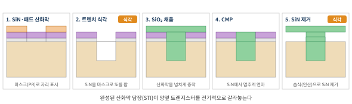
트렌치 식각에서 깎는 것은 Si이고, 남겨야 하는 것은 그 위의 SiN 하드마스크다. 즉 Si:SiN 선택비가 필요하며, 산화막이 아니라 실리콘을 깎으므로 fluorocarbon 대신 HBr·Cl2에 O2를 조금 섞은 할로겐 화학을 쓴다. 산소는 측벽에 얇은 SiOxBry 보호막을 만들어 옆으로 파이지 않게 한다. 요구 조건은 측벽 각도(산화막을 빈틈없이 채울 수 있도록 살짝 기울게), 바닥 모서리를 둥글게(전기장 집중 방지), 웨이퍼 전체의 깊이 균일도다. 마지막 SiN 제거는 뜨거운 인산(H3PO4)으로 하는 습식 식각인데, 이번에는 반대로 SiN을 깎고 SiO2는 남겨야 한다.
high-k: 왜 SiO2를 버렸나
Cox를 키우려고 SiO2를 계속 얇게 만들다 보니 2000년대 초반 두께가 원자 몇 층(약 1.2 nm)까지 내려갔다. 이 정도면 전자가 양자역학적으로 터널링해 게이트로 새어나가는 누설전류가 감당할 수 없을 만큼 커진다. 해법은 두께 대신 유전율을 키우는 것이었다. HfO2는 유전율이 SiO2의 약 5~6배라, 물리적으로 더 두꺼운 막으로 같은 Cox를 얻으면서 터널링을 억제한다. 이때 poly-Si 게이트와 high-k의 궁합 문제(Vth 고정, 이동도 저하) 때문에 게이트도 금속으로 바뀌었다. 이 조합이 HKMG(High-k Metal Gate)로, Intel이 2007년 45 nm 공정에 처음 양산 적용했다.
등가산화막두께(EOT) = thigh-k × (3.9 / khigh-k). k = 20인 HfO2 5 nm는 SiO2 약 1 nm와 같은 커패시턴스를 낸다.
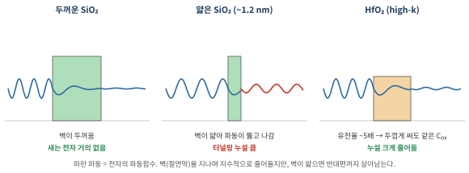
구리 배선과 다마신: 식각이 어려운 금속
알루미늄은 염소 플라즈마로 깎으면 휘발성 AlCl3가 생겨 쉽게 패터닝된다. 구리는 저항이 낮아 배선으로 좋지만, 상온에서 휘발성 화합물을 만드는 식각 화학이 마땅치 않다. 그래서 IBM이 1997년 도입한 방식은 거꾸로였다. 먼저 절연막에 홈을 식각하고, 그 안에 구리를 채운 뒤 넘친 부분을 CMP로 갈아내는 다마신(damascene) 공정이다. 결과적으로 배선 공정의 식각 대상이 금속에서 절연막(SiO2, low-k)으로 바뀌었고, 이 또한 fluorocarbon 플라즈마의 영역이다.
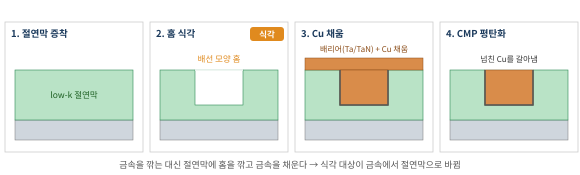
자기정렬 콘택(SAC): 질화막이 정지막이 되는 곳
1.2.2에서 "SiO2를 깎되 Si3N4는 남기는" 문제가 많다고 했다. 대표적인 예가 메모리와 로직 모두에서 쓰는 자기정렬 콘택이다. 게이트가 촘촘해지면 그 사이에 콘택홀을 정확히 가운데 맞춰 뚫기가 어렵다. 그래서 게이트의 위(캡)와 옆(스페이서)을 미리 Si3N4로 감싸 두고, 콘택홀 마스크가 조금 어긋나더라도 SiO2만 깎이고 Si3N4는 거의 안 깎이도록 식각한다. 그러면 어긋난 쪽은 질화막 위에서 멈추고, 나머지 부분만 아래 소스·드레인까지 내려간다. 구멍의 위치를 마스크가 아니라 질화막 구조가 스스로 정해 준다는 의미에서 "자기정렬"이다.
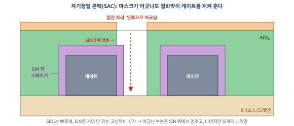
1.8 스케일링과 무어의 법칙, 그 한계
1.8.1 무어의 법칙, 스케일링, 데너드 스케일링: 셋은 어떤 관계인가
"무어의 법칙 때문에 스케일링을 한다"는 말은 절반만 맞다. 세 용어는 서로 다른 층위의 이야기다.
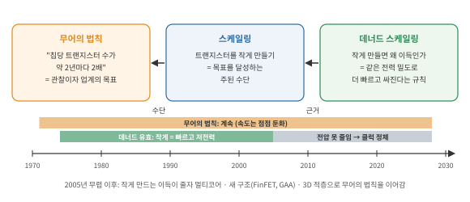
- 무어의 법칙 (목표): "칩당 트랜지스터 수가 약 2년마다 두 배가 된다." 자연법칙이 아니라 1965년의 관찰이었는데, 업계가 이를 로드맵으로 삼으면서 스스로 지키는 약속이 되었다. 장비사·소재사·칩 회사가 모두 이 속도에 맞춰 개발 일정을 짠다.
- 스케일링 (수단): 트랜지스터를 작게 만드는 것. 같은 면적에 두 배를 넣으려면 가로·세로를 각각 약 0.7배로 줄이면 된다(0.7 × 0.7 ≈ 0.5). 그래서 공정 세대가 바뀔 때마다 치수가 약 0.7배씩 줄어 왔다.
- 데너드 스케일링 (근거): 1974년 Robert Dennard가 제시한 규칙. 길이·폭·절연막 두께·전압을 모두 같은 비율(1/κ)로 줄이면 전력 밀도는 그대로이면서 속도는 κ배 빨라진다. 즉 작게 만들면 공짜로 더 빠르고, 트랜지스터당 전력은 줄고, 칩 하나의 원가도 떨어진다. 이 "공짜 점심" 덕분에 수십 년간 스케일링이 경제적으로 당연한 선택이었다.
같은 것이 아니다. 무어의 법칙이 요구하는 것은 "칩당 트랜지스터 수"이고, 스케일링은 그것을 달성한 가장 효과적인 방법이었을 뿐이다. 트랜지스터 수는 다른 방법으로도 늘릴 수 있다. 칩을 크게 만들거나, 칩을 여러 장 쌓거나(HBM, 4장), 셀을 위로 쌓거나(V-NAND, 3장), 트랜지스터 구조를 바꿔 같은 면적에 더 넣는 것(FinFET·GAA, 1.9절)이다.
그리고 스케일링을 하는 이유도 무어의 법칙 하나만은 아니다. 작게 만들면 빨라지고 전력이 줄고 원가가 내려가니, 회사들은 경쟁에서 이기려고 스케일링을 한다. 무어의 법칙은 그 경쟁의 속도를 업계 공통의 시간표로 만든 것이라고 보면 정확하다.
중요한 전환점은 2005년 무렵이다. 이때부터 전압을 더 내릴 수 없게 되어(1.6절의 60 mV/dec 한계) 데너드 스케일링이 깨졌다. 작게 만들어도 더 이상 공짜로 빨라지거나 전력이 줄지 않게 되자, CPU 클럭 속도는 수 GHz에서 멈췄고 업계는 멀티코어, 새 트랜지스터 구조, 3차원 적층으로 방향을 틀었다. 무어의 법칙은 속도가 느려지면서도 이런 방법들로 이어지고 있다.
1.8.2 벽에 부딪히다
2000년대 중반 이후 이 규칙이 깨지기 시작했다.
- 전압을 못 줄인다: Vth를 낮추면 OFF 상태 누설이 지수적으로 커진다(서브문턱 기울기의 열적 한계, 상온에서 약 60 mV/decade). 전압이 안 내려가니 전력 밀도가 올라간다.
- 단채널 효과: L이 짧아지면 드레인 전기장이 채널까지 파고들어 게이트의 통제력이 약해진다. 드레인 전압이 Vth를 낮추는 DIBL, 꺼져야 할 때 새는 누설 등이 생긴다.
- 절연막 터널링: 앞의 high-k 이야기(그림 1-31).
- 제조 난이도와 비용: 패턴이 빛의 파장보다 훨씬 작아져 EUV 노광, 여러 번 나눠 찍는 멀티패터닝이 필요해졌고, 식각·증착 단계 수가 크게 늘었다. 트랜지스터당 원가가 예전처럼 빠르게 떨어지지 않는다.
그래서 업계는 "게이트가 채널을 더 많은 면에서 감싸게" 구조를 바꾸는 방향으로 나아갔다. 이것이 다음 절의 3차원 트랜지스터다.
1.9 구조의 진화: 그림으로 해부하기
Planar, FinFET, GAA 그림은 어디서나 보지만 막상 이해가 안 되는 이유는 대개 하나다. 그림만 봐서는 소스와 드레인이 어디고, 전류가 어느 방향으로 흐르는지가 안 보인다. 이 절에서는 세 방향을 먼저 정하고, 같은 트랜지스터를 3D로 한 번, 전류에 수직으로 잘라서 한 번 보는 방식으로 해부한다.
1.9.1 그림 읽는 법: 세 방향과 세 가지 규칙
모든 트랜지스터 그림에는 세 방향이 있다.
- L 방향 (전류 방향): 소스 → 게이트 아래 → 드레인. 게이트가 이 방향으로 차지하는 길이가 게이트 길이 L이다.
- W 방향 (폭 방향): L에 수직인 수평 방향. 게이트가 길게 뻗어 있는 방향이고, 이 방향으로 채널이 얼마나 넓은지가 채널 폭 W다.
- 높이 방향: 웨이퍼에 수직.
그리고 구조가 바뀌어도 변하지 않는 규칙이 셋 있다.
- 게이트는 전류 길을 가로지르는 다리다. 게이트는 항상 W 방향으로 길게 뻗어, L 방향으로 흐르는 전류 길 위를 건너간다.
- 소스와 드레인은 게이트의 양쪽에 있다. 게이트를 사이에 두고 한쪽이 소스, 반대쪽이 드레인이다.
- 채널은 게이트와 맞닿은 실리콘 표면이다. Planar에서는 평평한 윗면, FinFET에서는 핀의 세 면, GAA에서는 시트의 네 면이다. 구조 진화의 전부는 이 "맞닿은 면"을 늘리는 과정이다.
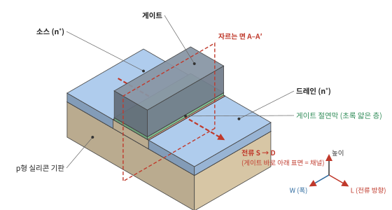
그림 1-35을 그림 1-22와 비교해 보자. 1.6절의 단면(그림 1-22)은 전류 방향(L)을 따라 자른 것이라 소스·게이트·드레인이 나란히 보였다. 이번에는 빨간 면 A–A′처럼 전류에 수직으로(W 방향으로) 잘라 보면 게이트와 채널의 관계가 드러난다. Planar에서는 이 단면에서 게이트가 채널을 위에서 한 면만 누르고 있다. 이 단면이 Planar/FinFET/GAA를 구분하는 핵심 그림이다(1.9.3).
1.9.2 왜 바꿔야 했나: 게이트와 드레인의 줄다리기
트랜지스터가 꺼져 있을 때, 소스와 드레인 사이 채널에는 전자가 넘지 못하는 전위 장벽이 있다. 게이트 전압은 이 장벽의 높이를 조절해 켜고 끄는 손잡이다. 그런데 드레인에도 높은 전압이 걸려 있고, 드레인 주변에는 넓은 공핍층이 퍼져 있다.
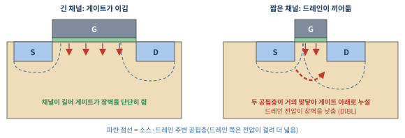
채널이 길면 장벽의 대부분을 게이트가 쥐고 있어 문제가 없다. 그러나 L이 짧아지면 소스와 드레인의 공핍층이 서로 가까워지고, 드레인 전압이 게이트 대신 장벽을 끌어내리기 시작한다(DIBL, Drain-Induced Barrier Lowering). 특히 위험한 곳은 게이트에서 먼 깊은 곳이다. 표면은 게이트가 붙잡고 있지만, 표면 아래 수십 nm 지점은 게이트 영향이 약해서 꺼져야 할 때도 전자가 새는 길이 된다.
해법은 단순하다. 채널 몸통이 전부 게이트 가까이 있도록 몸통을 얇게 만들고, 게이트로 여러 면을 감싸면 된다. "게이트에서 먼 곳"을 아예 없애는 것이다. 몸통을 얇게 하는 방법으로는 얇은 실리콘 아래에 산화막을 깐 FD-SOI도 있고(삼성 28 nm FD-SOI 등), 첨단 로직의 주류는 몸통을 세우거나(FinFET) 띄우는(GAA) 쪽으로 갔다.
회로가 건다. 칩에는 전원 전압 VDD(최신 로직은 1 V 안팎)가 공급되고, 각 트랜지스터의 소스·드레인은 회로 배선으로 전원, 접지, 또는 다른 트랜지스터에 연결된다. 예를 들어 그림 1-27의 인버터에서 출력이 1인 동안 NMOS는 꺼져 있고, 그 드레인(출력 노드)은 VDD에 묶여 있다. 꺼져 있는 NMOS 입장에서는 드레인에 VDD가 걸린 채로 버티는 셈이고, 이때 새는 전류가 Ioff다. PN 접합의 내장 전위처럼 "저절로" 생기는 전압과 구분해야 한다. 드레인 전압은 회로 동작 중에 바깥에서 공급되는 전압이다.
1.9.3 핵심 그림: 전류에 수직으로 자른 단면 (A–A′)
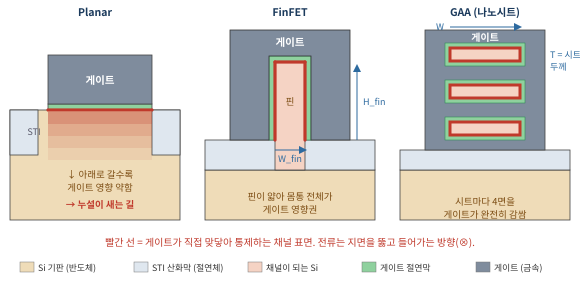
- Planar: 게이트가 위 한 면만 누른다. 아래로 갈수록 게이트 영향이 약해져 누설 경로가 남는다.
- FinFET: 실리콘을 얇은 벽(핀)으로 세우고 게이트가 위·양옆 세 면을 감싼다. 핀 폭이 수 nm로 얇아서 몸통 어디도 게이트에서 멀지 않다. 핀 아래쪽은 STI 산화막에 묻혀 있고, STI 위로 드러난 부분만 채널로 쓴다.
- GAA: 실리콘을 얇은 판(시트) 여러 장으로 띄우고, 게이트가 각 시트의 위·아래·양옆 네 면을 모두 감싼다. 게이트 통제력이 구조적으로 최대다.
범례대로 베이지는 실리콘 기판(반도체), 연한 회청색은 STI 산화막(절연체), 분홍은 채널이 되는 실리콘, 초록은 게이트 절연막, 회색은 게이트다. 핀(분홍)은 기판과 같은 실리콘이 위로 솟은 것이고, 그 아랫부분이 STI에 묻혀 있다.
이 그림은 전류에 수직으로 자른 단면이라 채널 부분만 보인다. 소스와 드레인은 이 종이의 앞쪽과 뒤쪽에 있다. 핀 하나를 길게 놓고 보면 앞쪽 끝이 소스, 게이트에 덮인 가운데가 채널, 뒤쪽 끝이 드레인으로, 핀 하나에 소스·채널·드레인이 모두 들어 있다. 이 모습은 그림 1-38과 그림 1-39에서 확인할 수 있다.
이 단면에서 빨간 선의 총 길이가 곧 유효 채널 폭(Weff)이다. 전류는 채널 폭에 비례하므로, 같은 바닥 면적에서 빨간 선을 길게 만들수록 전류를 많이 흘릴 수 있다.
Planar: Weff = W
FinFET: Weff = Nfin × (2Hfin + Wfin)
GAA: Weff = Nsheet × 2(W + T)
즉 3차원 구조는 두 가지를 동시에 얻는다. 통제력(감싸는 면이 늘어남)과 면적 대비 전류(폭을 위로 쌓음). 이것이 "평면에서 줄이던 것을 위로 쌓아 해결한다"의 구체적 의미다.
1.9.4 FinFET 해부
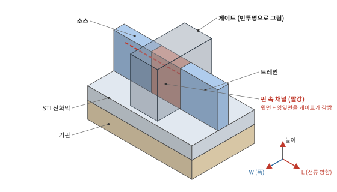
그림 1-38을 세 규칙으로 읽어 보자. 핀은 전류 방향으로 길게 놓인 실리콘 벽이다(규칙 1의 전류 길). 게이트는 그 핀을 말안장처럼 올라타고 W 방향으로 건너간다(규칙 1의 다리). 게이트 앞쪽 핀 끝이 소스, 뒤쪽 핀 끝이 드레인이다(규칙 2). 그리고 게이트에 덮인 핀의 윗면과 양옆면이 채널이다(규칙 3). 실제 소자에서는 소스·드레인 쪽 핀 위에 실리콘(또는 SiGe)을 에피택시로 덧키워 접촉 면적을 넓힌다.
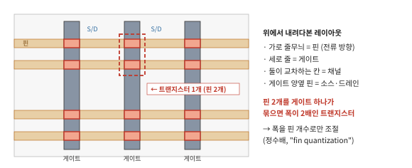
위에서 보면 구조가 훨씬 단순하다. 웨이퍼 위에 핀이 가로로 줄지어 있고, 게이트가 세로로 지나간다. 교차하는 칸이 채널이고, 게이트 양옆의 핀이 소스·드레인이다. 전류를 더 흘리고 싶으면 게이트 하나로 핀 여러 개를 묶는다. 그래서 FinFET의 폭은 핀 개수의 정수배로만 조절된다(fin quantization). 회로 설계자 입장에서는 미세 조절이 어렵다는 단점이고, GAA가 이를 해결한다.
1.9.5 GAA 해부
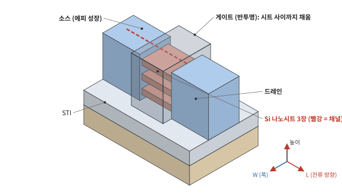
GAA는 FinFET의 핀을 옆으로 눕힌 얇은 판 여러 장으로 바꾼 것이라고 생각하면 쉽다. 각 시트는 소스와 드레인 사이에 걸린 다리이고, 게이트 물질이 시트 위아래 틈새까지 채워 네 면을 모두 감싼다. 시트 폭(W)은 리소그래피로 정하므로 설계에 따라 넓게도 좁게도 만들 수 있어, FinFET의 정수배 제약이 풀린다. 삼성전자는 이 구조를 MBCFET(Multi-Bridge-Channel FET)이라 부르며 2022년 3 nm에서 세계 최초로 양산했다.
1.9.6 GAA는 어떻게 만드나: 식각의 비중이 커지는 이유
공중에 뜬 시트를 어떻게 만들까? 처음부터 띄우는 것이 아니라 Si와 SiGe를 번갈아 쌓은 뒤 SiGe만 나중에 빼내는 방식이다. 아래 그림은 전류 방향(L)으로 자른 단면이다.
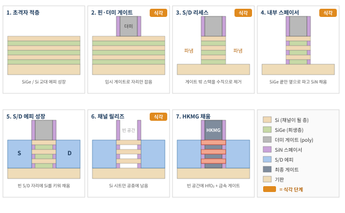
- 초격자 적층: SiGe와 Si를 수 nm 두께로 번갈아 에피택시 성장시킨다. Si 층이 나중에 채널이 되고, SiGe는 자리를 잡아주는 희생층이다.
- 핀 패터닝 · 더미 게이트: 적층 전체를 핀 모양으로 수직 식각한다(서로 다른 두 물질이 번갈아 있는 스택을 같은 속도·같은 각도로 깎아야 한다). 그 위에 나중에 버릴 폴리실리콘 더미 게이트를 식각으로 만들고 질화막 스페이서를 붙인다.
- S/D 리세스: 게이트·스페이서 바깥의 스택을 바닥까지 수직으로 파낸다. 스페이서 아래에서 정확히 멈춰야 한다.
- 내부 스페이서: 드러난 측면에서 SiGe만 수 nm 옆으로 파고(등방성 선택 식각), 그 자리를 질화막으로 채운 뒤 다시 다듬는다. 나중에 게이트와 소스·드레인이 맞닿지 않게 하는 절연 벽이다. 모든 층에서 파고든 깊이가 같아야 하므로 원자 수준의 균일도가 요구된다.
- S/D 에피 성장: 파낸 자리에 고농도로 도핑된 Si(PMOS는 SiGe)를 키운다. 이제 Si 시트의 양 끝이 소스·드레인에 붙는다.
- 채널 릴리즈: 더미 게이트를 제거하고, 드러난 SiGe 층을 Si는 건드리지 않고 SiGe만 녹여낸다. Si 시트가 소스·드레인에 매달린 채 공중에 뜬다.
- HKMG 채움: 빈 공간 전체에 HfO2 절연막과 금속 게이트를 증착해 각 시트를 감싼다.
각 단계에서 무엇을 어떤 방식으로 깎는지 정리하면 다음과 같다. 화학은 회사·세대마다 다르므로 대표적인 계열로 이해하면 된다.
| 단계 | 깎는 막 → 남길 막 | 식각 방식 | 핵심 요구 |
|---|---|---|---|
| 2 핀 패터닝 | Si/SiGe 스택 → 하드마스크 | 이방성 건식(RIE), HBr·Cl2 계열 | 서로 다른 두 물질을 같은 속도·같은 각도로, 깊이 균일 |
| 2 더미 게이트 | poly-Si → 핀 위 얇은 산화막 | 이방성 건식, HBr·Cl2·O2 | 핀 사이 깊은 틈 바닥까지 수직으로, 얇은 산화막에서 정지 |
| 2 게이트 스페이서 | SiN 수평면 → 측벽 SiN | 이방성 건식, CH3F·CHF3 등 hydrofluorocarbon | 측벽만 남기고 핀 표면 손상 최소 |
| 3 S/D 리세스 | Si/SiGe 스택 → 스페이서·게이트 캡 | 이방성 건식, HBr·Cl2 계열 | 스페이서 바로 아래에서 정확히 수직으로, 바닥 깊이 균일 |
| 4 SiGe 측면 리세스 | SiGe → Si (옆으로) | 등방성 선택 식각: 원격 플라즈마의 라디칼(F계) 건식 또는 습식 | 층마다 같은 깊이(수 nm), Si 손실 최소 |
| 4 내부 스페이서 다듬기 | 바깥으로 넘친 SiN → 홈 속 SiN | 등방성 SiN 식각 | 홈 속만 정확히 남기기 |
| 6 더미 게이트 제거 | poly-Si → 스페이서·산화막 | 선택적 건식 또는 습식 | 스페이서·하부 손상 없이 완전 제거 |
| 6 채널 릴리즈 | SiGe → Si 시트 | 등방성 고선택비: 라디칼 건식 또는 습식 | Si 시트 두께 변화 없이 SiGe 완전 제거, 시트가 붙지 않게 |
| 이후 콘택 | SiO2 → SiN | 이방성 건식, fluorocarbon (SAC) | 산화막:질화막 고선택비 (1.7절) |
"이방성"은 위에서 아래로만 깎는 것(이온이 방향을 정함), "등방성"은 모든 방향으로 고르게 깎는 것(라디칼·액체가 화학적으로 깎음)이다. 플라즈마 식각에서 이 둘을 어떻게 만들고 조절하는지는 2부에서 자세히 다룬다.
7단계 중 4단계가 식각이다. FinFET까지의 식각이 주로 위에서 아래로 깎는 이방성 식각이었다면, GAA에서는 특정 막만 옆으로 수 nm 파내는 등방성 고선택비 식각(4, 6단계)이 핵심 공정이 되었다. 이 단계들은 "몇 nm를 균일하게, 다른 막은 건드리지 않고"가 요구 조건이라 원자층 식각(ALE)이나 라디칼 기반 식각 같은 원자 수준 제어 기술이 들어오는 자리다.
네 ALE 연구는 대상 물질(SiO2/Si3N4)과 방향(이방성)은 다르지만, "사이클당 정해진 양만 깎고 스스로 멈추게 만든다"는 자기제한(self-limiting) 개념과 그 공정 창(window)을 찾는 방법론이 같다. 면접에서는 "물질은 다르지만 원자 수준 정량 제어라는 요구는 같고, 저는 그 공정 창을 실험적으로 찾는 일을 해봤다"로 연결할 수 있다.
1.9.7 그다음: CFET과 후면 전원 공급
GAA 다음 후보는 NMOS 시트 묶음과 PMOS 시트 묶음을 위아래로 겹쳐 쌓는 CFET(Complementary FET)이다. 지금까지는 NMOS와 PMOS가 옆으로 나란히 놓였는데, 이를 수직으로 쌓으면 셀 면적이 크게 줄어든다. 또 하나는 전원 배선을 웨이퍼 뒷면으로 빼는 후면 전원 공급(BSPDN)으로, 앞면 배선 혼잡과 전압 강하를 줄인다. 둘 다 "위로 쌓고, 뒤로 돌리는" 3차원화의 연장선이고, 쌓을수록 깊고 좁은 구조를 깎는 식각이 늘어난다. 이 흐름은 2~4장에서 볼 메모리(V-NAND, HBM, 3D DRAM)에서도 똑같이 나타난다.
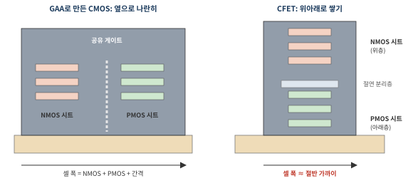
CFET에서 식각이 어려워지는 지점은 분명하다. 시트 묶음이 두 배 높이가 되어 더 깊은 수직 식각이 필요하고, 위층과 아래층의 소스·드레인을 따로 만들기 위해 특정 높이까지만 정확히 파고 멈추는 공정, 그리고 위·아래 층을 전기적으로 분리하는 절연층 형성이 새로 들어간다.
1.9.8 한눈에 비교
| Planar | FinFET | GAA (나노시트) | CFET (차세대) | |
|---|---|---|---|---|
| 채널 모양 | 평평한 표면 | 세운 얇은 벽 | 띄운 얇은 판 여러 장 | NMOS·PMOS 시트를 위아래로 |
| 게이트가 감싸는 면 | 1면 | 3면 | 4면 | 4면 |
| 폭(W) 조절 | 자유 | 핀 개수 정수배 | 시트 폭으로 자유 | 시트 폭 |
| 첫 양산 | ~ 28 nm 세대까지 주류 | Intel 22 nm (2011년 발표) | 삼성 3 nm (2022) | 연구·개발 단계 |
| 대표 식각 난제 | 게이트 CD | 핀 CD·수직도, fin reveal | 초격자 수직 식각, SiGe 측면 선택 식각 | 더 높은 스택, 상·하부 분리 |
1.10 식각 엔지니어의 시선으로 다시 보기
트랜지스터 하나를 완성하는 동안 거치는 대표적인 식각 단계를 정리하면 다음과 같다. 각 단계에서 무엇을 깎고, 무엇을 남겨야 하며, 무엇이 어려운지가 핵심이다.
| 단계 | 깎는 막 → 남길 막 | 대표 화학 | 핵심 난제 |
|---|---|---|---|
| STI 트렌치 | Si → 하드마스크(SiN) | Cl2, HBr, O2 | 측벽 각도, 바닥 모서리 둥글게, 깊이 균일도 |
| 핀(Fin) 형성 | Si → 하드마스크 | HBr, Cl2 | 핀 폭 CD, 수직도, 핀 높이 균일도 |
| 게이트 패터닝 | poly-Si / 금속 → 게이트 산화막 | HBr, Cl2, (금속) Cl/F계 | CD 제어, 얇은 산화막에서 정지 |
| 스페이서 | SiN (수평면만) → Si | CH3F, CHF3 등 | 이방성, 실리콘 손상(recess) 최소화 |
| GAA 시트 분리 | SiGe → Si (옆으로) | F계 라디칼, 등방성 | Si:SiGe 고선택비, 측면 균일도 |
| 콘택 (SAC) | SiO2 → Si3N4 | C4F6, C4F8 + Ar + O2 | 고선택비, 종횡비, 바닥 열림 |
| 비아·트렌치 (BEOL) | low-k → 식각정지막 | CF4, C4F8 등 | low-k 손상, 프로파일 |
표의 아래쪽 절반, 즉 산화막·질화막을 fluorocarbon으로 깎으며 선택비를 만드는 영역이 네 연구와 직결된다. C4F8, C4F6을 직접 써 봤고, CFx 막 두께와 이온 에너지가 식각량을 어떻게 정하는지 사이클 단위로 측정해 봤다는 것은 콘택·HARC 식각의 선택비 메커니즘을 가장 작은 단위에서 이해하고 있다는 뜻이다.
반대로 위쪽 절반(Si·금속을 할로겐으로 깎는 식각)은 네 경험이 상대적으로 얇은 부분이다. 면접에서는 "제 전문은 유전막 식각이고, 도체 식각은 원리는 알지만 직접 경험은 적다"처럼 경계를 정직하게 긋는 편이 신뢰를 준다.
1.11 핵심 요약
- 원자가 모이면 준위가 갈라져 띠가 된다. 실리콘은 결합 상태 띠(가전자대)가 꽉 차고 반결합 상태 띠(전도대)가 비어 있으며, 그 사이가 밴드갭(1.12 eV)이다. 결합이 강할수록 갭이 크다.
- 반도체와 부도체의 차이는 갭의 크기뿐이다. 갭이 크다고 전력이 더 드는 것은 아니다. 갭은 누설·내압·고온 동작을 좌우한다.
- 실리콘이 표준이 된 결정적 이유는 열산화로 만드는 우수한 SiO2다. 그 결과 "SiO2는 깎고 Si·Si3N4는 남기는" 선택비 식각이 공정의 핵심 문제가 되었다.
- 웨이퍼는 규사(SiO2) → 금속급 Si → 11N 폴리실리콘 → CZ 단결정 → 300 mm 웨이퍼 순서로 만든다. 규소(Si)와 규사(SiO2)는 다르다.
- 도펀트의 전자·정공은 수소 원자처럼 약하게 묶여 있어(~0.045 eV) 상온에서 대부분 자유 캐리어가 된다. 농도는 도핑과 온도가, 흐름은 전기장이 정한다.
- PN 접합은 확산 → 재결합 → 이온만 남은 공핍층 → 내부 전기장(언덕)으로 평형을 이루고, 순방향에서만 전류가 흐른다. MOSFET 안에도 숨어 있다.
- 트랜지스터는 1947년 벨 연구소에서, MOSFET은 1959년 Atalla와 강대원이 만들었다. 강대원은 1967년 플래시의 원리인 플로팅 게이트도 공동 발표했다.
- MOSFET은 게이트 전압으로 반전층을 만들어 채널을 여닫는다. ID ∝ μCox(W/L)이 스케일링의 방향을, 60 mV/dec 한계가 전압 스케일링의 벽을 설명한다.
- 재료는 SiO2/poly-Si → HfO2/금속 게이트, Al → Cu(다마신), SiO2 → low-k로 바뀌었고, 그때마다 식각 대상과 선택비 문제가 바뀌었다.
- 무어의 법칙은 목표, 스케일링은 수단, 데너드 스케일링은 근거다. 2005년 무렵 데너드가 깨진 뒤에는 새 구조와 3D 적층으로 이어간다.
- 구조는 Planar → FinFET → GAA → CFET로, "게이트가 채널을 더 많이 감싸고, 위로 쌓는" 방향이다. 쌓을수록 깊고 좁은 식각과 옆으로 정밀한 식각이 중요해진다.
면접 예상 질문
1.12 OX 퀴즈
먼저 풀어 보고 다음 쪽 해설로 확인하자. 틀린 문항은 해당 절로 돌아가 다시 읽으면 된다.다 풀면 자동으로 채점되고, 문항마다 해설과 관련 절 링크가 붙는다. 틀린 문항은 해당 절로 돌아가 다시 읽으면 된다.
| 번호 | 문장 | O / X |
|---|---|---|
| 1 | 반도체와 부도체는 둘 다 가전자대가 꽉 차 있고, 차이는 밴드갭의 크기뿐이다. | |
| 2 | 원자 사이 거리가 멀어질수록 에너지 띠의 폭은 넓어진다. | |
| 3 | 같은 4족 원소 중 다이아몬드(C)의 밴드갭이 실리콘보다 큰 이유는 결합이 더 짧고 강하기 때문이다. | |
| 4 | 밴드갭이 큰 반도체는 누설이 적은 대신 소비 전력이 크다. | |
| 5 | 상온 순수 실리콘의 진성 캐리어 농도는 약 1010 cm−3로, 원자 수(5×1022 cm−3)에 비하면 극히 적다. | |
| 6 | "산소 분위기에서 열산화한다"는 것은 산소 플라즈마로 실리콘을 식각한다는 뜻이다. | |
| 7 | 열산화막은 실리콘 위에 쌓이는 것이므로 원래 실리콘 표면 아래로는 변화가 없다. | |
| 8 | 규사(SiO2)와 규소(Si)는 같은 물질의 다른 이름이다. | |
| 9 | 선택비 50:1이란, 깎을 막이 50 nm 깎이는 동안 남길 막은 1 nm 깎인다는 뜻이다. | |
| 10 | 인(P)을 도핑한 실리콘에서 전자가 쉽게 자유로워지는 이유는 인 원자의 밴드갭이 작기 때문이다. | |
| 11 | 반도체에 전압을 걸면, 그 전기장이 가전자대 전자를 전도대로 끌어올려 전류가 흐른다. | |
| 12 | PN 접합의 공핍층에는 움직이는 캐리어가 거의 없고, 고정된 도펀트 이온만 남아 있다. | |
| 13 | PN 접합에 역방향 전압을 걸면 공핍층이 좁아져 전류가 잘 흐른다. | |
| 14 | 평형 상태의 PN 접합에서는 페르미 준위가 p쪽과 n쪽에서 같은 높이다. | |
| 15 | MOSFET은 1947년 벨 연구소의 Bardeen과 Brattain이 처음 만들었다. | |
| 16 | MOSFET의 서브문턱 기울기는 상온에서 약 60 mV/dec보다 가파르게 만들 수 없다. | |
| 17 | high-k 절연막을 쓰는 이유는 같은 두께에서 정전용량을 줄이기 위해서다. | |
| 18 | 구리 배선은 염소 플라즈마로 직접 식각해 패터닝한다. | |
| 19 | 자기정렬 콘택 식각은 SiO2:Si3N4 선택비가 높아야 한다. | |
| 20 | 무어의 법칙은 트랜지스터를 작게 만들면 전력 밀도가 일정하게 유지된다는 물리 법칙이다. | |
| 21 | 무어의 법칙을 지키는 방법은 트랜지스터 스케일링뿐이다. | |
| 22 | "3 nm 공정"의 트랜지스터는 게이트 길이가 3 nm다. | |
| 23 | FinFET의 채널 폭은 핀 개수의 정수배로만 조절된다. | |
| 24 | GAA 공정의 채널 릴리즈 단계에서는 Si를 제거하고 SiGe 시트를 남긴다. | |
| 25 | 두 원자가 결합해 준위가 둘로 갈라질 때, 갈라지는 것은 전자의 수가 아니라 전자가 앉을 수 있는 자리(상태)다. | |
| 26 | 평형 상태의 PN 접합에는 내장 전위가 있으므로, 전압계를 연결하면 약 0.7 V가 측정된다. | |
| 27 | 금속에도 게이트 전압을 걸면 MOSFET처럼 전도를 끄고 켤 수 있다. | |
| 28 | 실리콘 표면은 상온 공기 중에서도 1~2 nm 정도의 자연 산화막이 생긴다. |
1.12 OX 퀴즈 해설
다음 장 예고 · 2장 DRAM: 1T1C 셀 구조, 커패시터를 세우는 이유, 재료(ZrO2·TiN), 매립 워드라인, 커패시터 HARC 식각, 그리고 4F2, VCT, 3D DRAM까지.